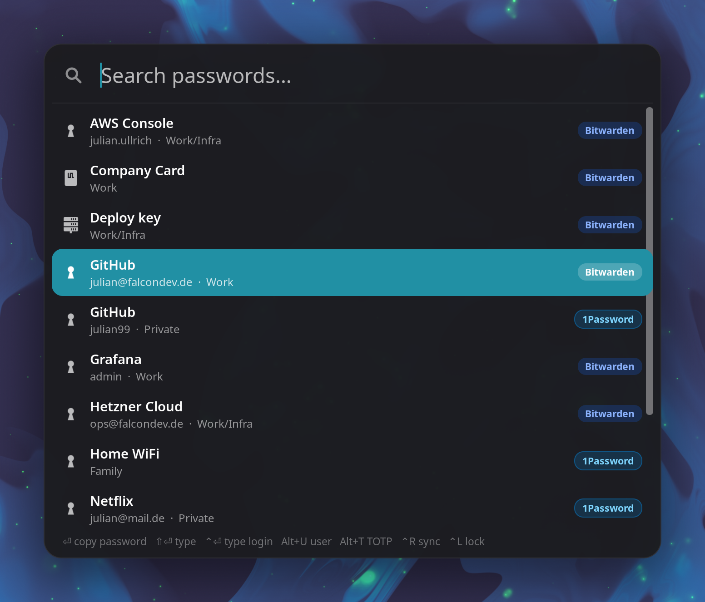
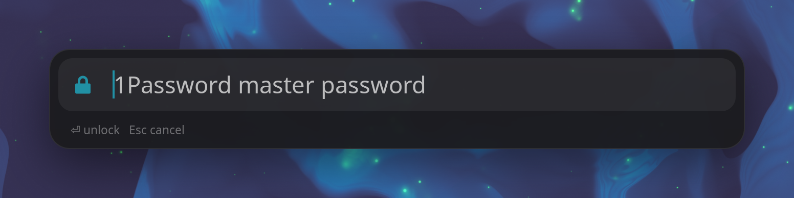
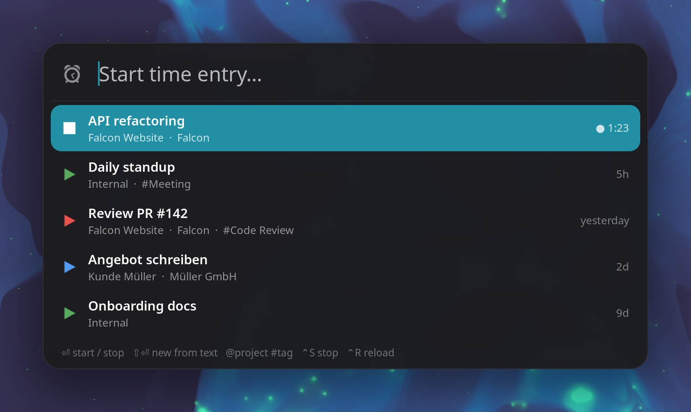

Quick Launcher Bitwarden, 1Password and Clockify from one GNOME shortcut
A GNOME Shell extension for people who keep work passwords in Bitwarden
and private ones in 1Password, or the other way round. One search finds
entries in both, and every row shows which vault it is from.
Press CtrlShiftEnter, type a few letters, press Enter:
the password is on the clipboard and is cleared again after 30 seconds. ShiftEnter
types it into the focused window instead. That works on Wayland without ydotool or a uinput
daemon.

What it does
One list, two vaults: Bitwarden through rbw,
1Password through the op CLI. Each
row shows its source, along with the username and the folder or 1Password vault.
Unlock in place: a locked vault is a row. Press Enter and type
the master password into the launcher, or let the 1Password app ask. Bitwarden's prompt can
come to the launcher as well, through a small pinentry bridge.
Copy or type: passwords, usernames and TOTP codes, or the whole login
(username, Tab, password, Enter).
Fast: the popup opens with what it already has and refreshes in the
background. Only names and usernames stay in memory. Passwords are fetched when you use
them.
Clockify: a second shortcut lists your recent time entries with when you
last worked on them. Enter restarts one; the running timer stops at the same second.
@project and #tag work in new entries.


Install
Needs GNOME Shell 48, 49 or 50, and rbw and/or op set up. Download the zip from the
latest release, then go to your Downloads folder: